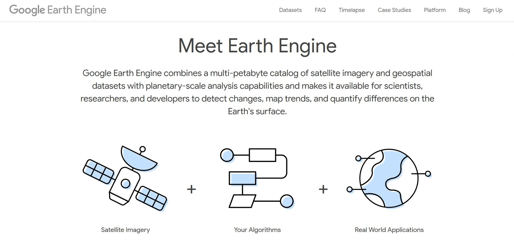
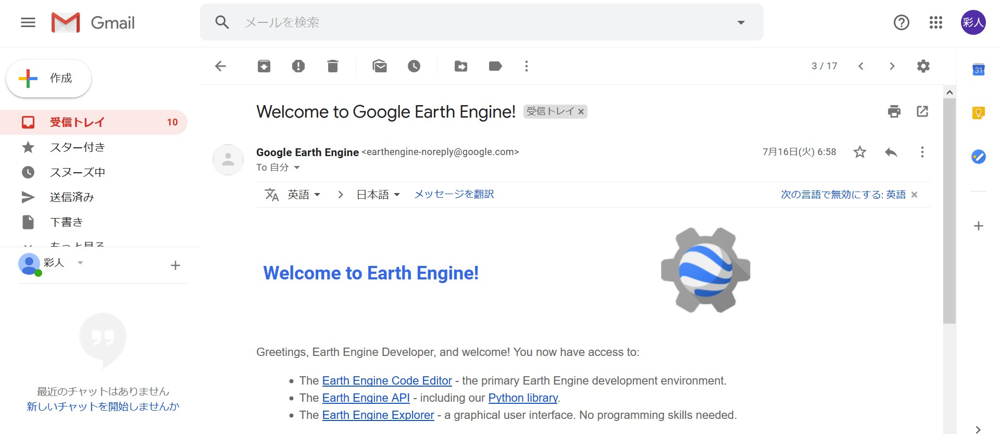
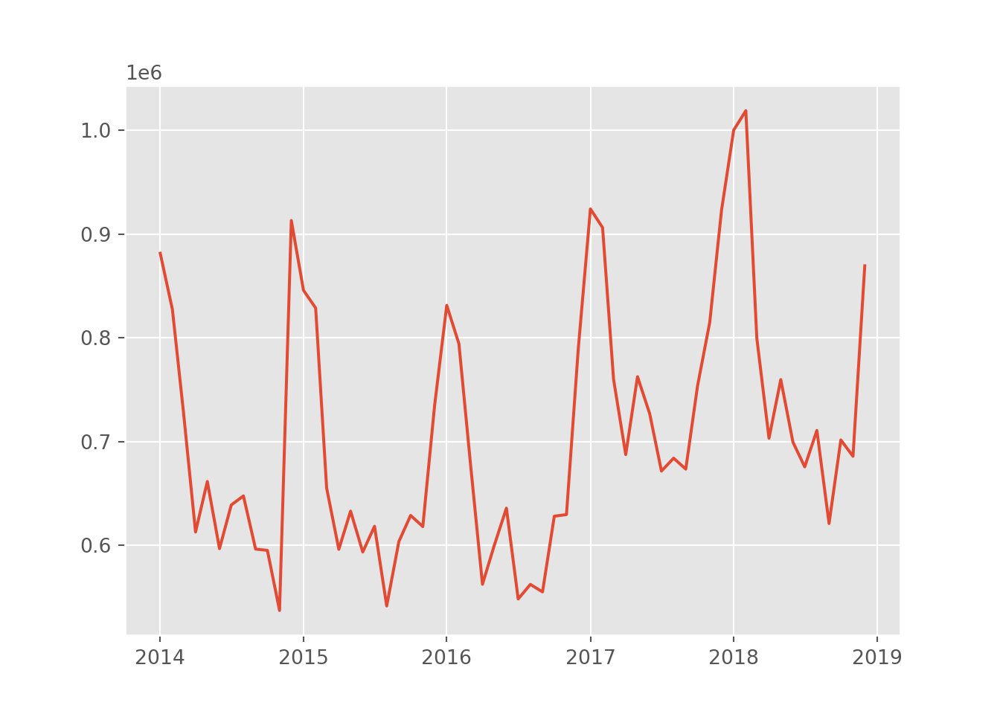

Obtaining satellite image data with the Google Earth Engine API and do nowcasting on business conditions

Hi. Last time, we built a GDP forecasting model using the GPLVM model. However, since we are talking about nowcasting, I would like to perform an analysis using alternative data. I suddenly found the following article.
Focus: Nowcast’s GDP estimates, including the world’s first increased use of satellite imagery
Here’s an article by Dr. Tsutomu Watanabe of the University of Tokyo, who developed a GDP forecasting model using satellite images. In the article, the following is written
The U.S. National Oceanic and Atmospheric Administration (NOAA) purchases images of the Suomi NPP meteorological satellite as it passes over Japan at 1:30 a.m. each day and measures the brightness of each square in a 720-meter vertical and horizontal grid. Even with the same brightness, the magnitude of economic activity varies depending on the use of the land, such as agricultural land, commercial land, industrial land, etc., so refer to the Land Use Survey of the Geographical Survey Institute. The correlation between land use and economic activity indicated by brightness is played out, and the magnitude of economic activity is estimated from the brightness, taking this result into account. Watanabe calls this the “democratization of statistics” and predicts that it will become a global trend, because anyone can analyze publicly available data like satellite images, regardless of whether it is government or private sector.
and, I was intrigued by the analysis using satellite images.
Is satellite photography available to everyone? But then I found out that Google is offering a service called Earth Engine.

https://earthengine.google.com/
Google Earth Engine combines a multi-petabyte catalog of satellite imagery and geospatial datasets with planetary-scale analysis capabilities and makes it available for scientists, researchers, and developers to detect changes, map trends, and quantify differences on the Earth’s surface.
If it’s for research, education, or non-commercial purposes, what a great way to analyze satellite photo data for free. Watch the video below to see what exactly it can do.
In this post, I will use Eath Engine’s Python API to acquire and analyze satellite image data.
1. Preparing to use the Earth Engine in advance
In order to use Earth Engine, you need to apply using your Google Account. You can do this from “Sign Up” in the upper right corner of the image above. After you apply for it, you will receive an email in your Gmail as shown below.

とりあえずというのはWEB上のEarth Engine コードエディタは使用できるということです。コードエディタというのは以下のようなもので、ブラウザ上でデータを取得したり、解析をしたり、解析結果をMAPに投影したりすることができる便利ツールです。Earth Engineの本体はむしろこいつで、APIは副次的なものと考えています。

You can type the code into the code editor in the middle, but the language is javascript (the API is both python and javascript). It’s quite useful because you can project the analysis results to MAP, refer to the reference (left), and check the data spit out to Console. However, if you want to do advanced analysis after dropping the data, you should use Python, which I am familiar with, so I use the API in this case.
I digress. Now, once you get the Earth Engine approval, install the earthengine-api with pip. Then, type earthengine authenticate on the command prompt. Then, the browser will open by itself and you will see a screen for python api authentication as shown below.

次に以下のような画面にいきますので、そのまま承認します。これでauthenticationの完成です。pythonからAPIが使えます。

2. Obtaining Satellite Image Data Using Python API
We are now ready to use the Python API. From here, we will retrieve the satellite image data. As you can see below, there are many datasets in the Earth Engine.
https://developers.google.com/earth-engine/datasets/
We will use the VIIRS Stray Light Corrected Nighttime Day/Night Band Composites Version 1 dataset. This dataset provides monthly averages of nighttime light intensity around the world. The sample period is 2014-01~present.
The Earth Engine has several unique data types. You should remember the following three.
Image
The raster data at a single point in time. An image object is composed of several bands. This band varies from data to data, but roughly each band may represent an RGB value. These are the most basic data for using the Earth Engine.
ImageCollection
The object of Image objects in chronological order. In this case, we will use this data for time-series analysis.
FeatureCollection…
The GeoJSON Feature. It contains Geometry objects for geographic information and their properties (e.g. country names). This time, this feature is used to get location information of Japan.
Let’s start with the coding. The first step is to get the FeatureCollection object for Japan. Geographical information is stored in the Fusion Tables and we extract the data whose country is Japan by ID. FeatureCollection(), we can get it easily by passing the ID as an argument to ee.
import ee
from dateutil.parser import parse
ee.Initialize()
# get Japan geometory as FeatureCollection from fusion table
japan = ee.FeatureCollection('ft:1tdSwUL7MVpOauSgRzqVTOwdfy17KDbw-1d9omPw').filter(ee.Filter.eq('Country', 'Japan'))Next, let’s get a nighttime satellite image. ImageCollection() is also used to obtain a nighttime satellite image. ImageCollection(). Here, band is extracted to avg_rad, which is monthly average light intensity.
# get night-light data from earth engine from 2014-01-01 to 2019-01-01
dataset = ee.ImageCollection('NOAA/VIIRS/DNB/MONTHLY_V1/VCMSLCFG').filter(ee.Filter.date('2014-01-01','2019-01-01')).select('avg_rad')Let’s cut out a satellite image to the area around Japan and output it as an image file. You can use the image object to create an image file (otherwise, you will get a lot of images…). . Since what you just got is an ImageCollection object, you need to compress it into an Image object (top is an ImageCollection object, bottom is a compressed Image object).

Here, I would like to show you the average image of the sample period from the average value of Image objects in an ImageCollection object. You can do this with ImageCollection.mean(). Also, I used .visualize({min:0.5}) to filter the image if the pixel value is more than 0.5. If you don’t do this, you can’t see what you think are clouds or garbage? You’ll get something like this. Next, the method .getDownloadURL is used to get the URL to download the processed image. (If the scale is too small, an error occurs and the image cannot be processed.
dataset.mean().visualize(min=0.5).getDownloadURL(dict(name='thumbnail',region=[[[120.3345348936478, 46.853488838010854],[119.8071911436478, 24.598157870729043],[148.6353161436478, 24.75788466523463],[149.3384411436478, 46.61252884462868]]],scale=5000))Here’s the image we got.

As expected, light levels are high in the Kanto area centered on Tokyo, the Kansai area centered on Osaka, Aichi, Fukuoka and Hokkaido (Sapporo and its vicinity), indicating that economic activity is active. It also shows that there are areas with higher light levels in the coastal areas than on land. This may not seem to be a phenomenon directly related to economic activity. It is striking that the northern part of the image becomes completely dark after 38 degrees north latitude, which is outside the scope of this analysis. Needless to say, this is the borderline between North and South Korea, so the difference in the level of economic activity between the two countries must be visually contrasted. The dataset we used here is from 2014, but some other datasets allow us to get data from the 1990s (although we can’t get more recent data instead). It would be interesting to use them to observe the economic development of the Korean peninsula and China.
Now that we have the image, we can’t analyze it at this point. We will try to get the data of the nightlight mapped to pixel values and analyze it numerically. However, the procedure to acquire the data is a little different from the previous one. But the procedure is a little different from the previous one, because this time you need to aggregate** all the different values of nighttime light in Japan, pixel by pixel, into a single proxy value. Once you have the pixel-by-pixel values, you have too much to analyze. The image looks like this (taken from the Earth Engine site)

The left image is a satellite image at one point in time of the ImageCollection acquired earlier. The Earth Engine API provides the method .reduceRegions(), so you can use it. The arguments are: reducer=aggregation method (here, the total value), collection=region (a FeatureCollection object), and scale=resolution. Here, the first Image object in an ImageCollection (dataset) is called with the .reduceRegions() method.
# initialize output box
time0 = dataset.first().get('system:time_start');
first = dataset.first().reduceRegions(reducer=ee.Reducer.sum(),collection=japan,scale=1000).set('time_start', time0)Since we want time series data, we need to do the same thing for each Image in the ImageCollection. processing. Here, the function myfunc is defined to merge the Computed Object processed by the reduceRegions method with the previously processed one in the Image object, and it is passed to iterate. Finally, the generated data is downloaded using the getDownloadURL method as before (file format is csv).
# define reduceRegions function for iteration
def myfunc(image,first):
added = image.reduceRegions(reducer=ee.Reducer.sum(),collection=japan,scale=1000).set('time_start', image.get('system:time_start'))
return ee.FeatureCollection(first).merge(added)
# implement iteration
nightjp = dataset.filter(ee.Filter.date('2014-02-01','2019-01-01')).iterate(myfunc,first)
# get url to download
ee.FeatureCollection(nightjp).getDownloadURL(filetype='csv',selectors=ee.FeatureCollection(nightjp).first().propertyNames().getInfo())I was able to get the url to the CSV file. I’m going to plot this time series to end today. Here’s what it looks like when you load the data.
import pandas as pd
import matplotlib.pyplot as plt
import os
os.environ['QT_QPA_PLATFORM_PLUGIN_PATH'] = 'C:/Users/aashi/Anaconda3/Library/plugins/platforms'
plt.style.use('ggplot')
nightjp_csv.head()## system:index sum Country Unnamed: 3 Unnamed: 4
## 0 2014/1/1 881512.4572 Japan NaN NaN
## 1 2014/2/1 827345.3551 Japan NaN NaN
## 2 2014/3/1 729110.4619 Japan NaN NaN
## 3 2014/4/1 612665.8866 Japan NaN NaN
## 4 2014/5/1 661434.5027 Japan NaN NaNplt.plot(pd.to_datetime(nightjp_csv['system:index']),nightjp_csv['sum'])
It’s quite seasonal. It seems that the amount of light seems to increase in the winter because there are less hours of daylight. Nevertheless, it is a rapid increase. Next time, I would like to perform a statistical analysis based on this data and economic statistics, which is a proxy variable for business confidence. Please stay tuned.
Ayato Ashihara
company employee
This blog is a nightly update by a man who is working in his forth year since completing graduate school. The content of this blog has nothing to do with the official position of the author’s organization.